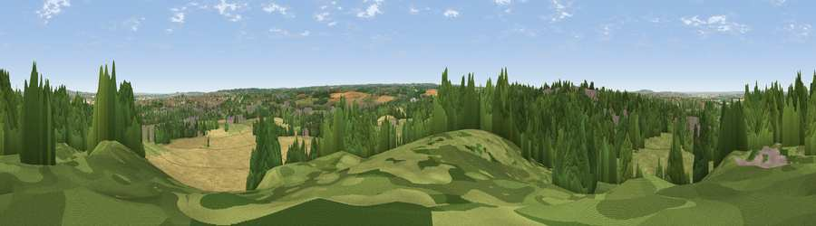

Bean Hill
#24692 in England · top 24% of its area beats it · near Ebbsfleet ValleyThe view, rendered

A 360° render of this exact spot computed from the terrain model, tree cover and land cover — summer colours, afternoon light, calibrated against photographs of famous viewpoints. Real trees, hedges and buildings will differ in detail.
The panorama
Grey silhouette: terrain skyline in each direction (720 bearings, Earth curvature and refraction included). Dashed green: skyline with trees (+15 m) and buildings (+8 m) as obstacles. Blue strip: how far the ground is visible on each bearing.
Where the view opens
Wedge length = distance to the farthest visible ground on that bearing (vegetation-aware). Rings at 10, 25 and 50 km.
What fills the view
38% woodland · 26% grassland · 18% cropland · 16% built-up · 2% water ·
Angular shares of the visible panorama (visual magnitude), not map area. Landscape diversity 0.62 (0–1 Shannon).
Key numbers
More beautiful places nearby
The staircase of upgrades: each row has a higher view potential than everything closer. Driving times are estimates from straight-line distance, calibrated against real road routing — check an actual route before setting out.
| Place | Direction | Drive | Score |
|---|---|---|---|
| Viewpoint near Ebbsfleet Valley | NNE · 0 km | ~1 min | 56.1 |
| Viewpoint near Vigo Village | SSE · 12 km | ~22 min | 61.9 |
| Viewpoint near Vigo Village | SSE · 12 km | ~22 min | 64.6 |
| Viewpoint near Vigo Village | SSE · 12 km | ~23 min | 65.0 |
| Viewpoint near Birling | SSE · 12 km | ~23 min | 65.2 |
| Viewpoint near Wrotham | S · 13 km | ~23 min | 66.6 |
| Viewpoint near Shipbourne | S · 19 km | ~33 min | 69.1 |
| Box Hill | WSW · 44 km | ~65 min | 70.4 |
51.42805, 0.29829 · source: dobih hill · position refined by local search. Computed location — check access rights before visiting.